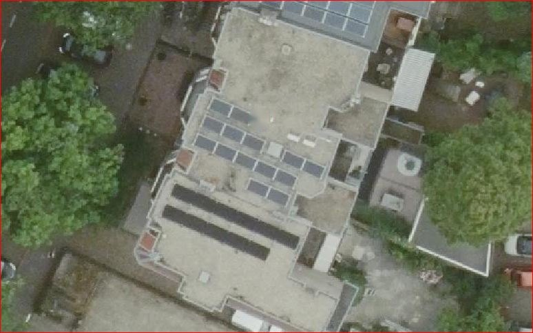

Verduurzamingsgids · Installatie
Zonne-energie (PV)
Zonnepanelen tellen mee voor je label op basis van het opgewekte vermogen. Daarvoor zijn aantal en wattage doorslaggevend.
Verduurzamingsgids · Installatie
Zonnepanelen tellen mee voor je label op basis van het opgewekte vermogen. Daarvoor zijn aantal en wattage doorslaggevend.
PV-panelen verlagen je energiebehoefte op papier — mits je het vermogen kunt aantonen. Kun je het vermogen niet aantonen, dan schat de adviseur het aantal van een foto, maar blijft het exacte wattage onzeker en wordt het voorzichtig ingeschat.
Tel de panelen op het dak en zoek de omvormer (vaak in de meterkast of op zolder). Op de achterkant van een paneel en op de omvormer staat een typeplaatje met de specificaties.
Ga vóór aanschaf en montage na of het product in de aangeboden opstelling bekend is bij het BCRG-register. Dan mag de adviseur de gunstige, productspecifieke waarde overnemen. Zo niet, dan geldt een voorzichtige forfaitaire waarde.


| Sterk bewijs | Zwak of onbruikbaar |
|---|---|
| Factuur "10 panelen × 400 Wp" + dakfoto waarop je 10 panelen telt + foto omvormer. | "We hebben zonnepanelen" zonder aantal, vermogen of foto. |
| Typeplaatje omvormer en/of paneel leesbaar in beeld. | Dakfoto van te ver waarop de panelen niet te tellen zijn. |
| Totaal vermogen (kWp) herleidbaar uit de factuur. | Geen factuur en geen wattage bekend. |
Zonder factuur blijft het wattage onzeker en wordt het voorzichtig ingeschat. Met de factuur erbij telt elke watt mee.